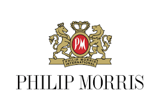

Acerca de mi experiencia Profesional
SISA Consultores
Ingeniero de implementacion
2019 - a la fecha
Encargado de realizar las implementaciones de las soluciones que vende la empresa (instalación de switches, redes inalámbricas, firewall, antivirus, telefonía, etc).
-

Philip Morris Mexico
End User Support (Soporte a Usuarios)
2013 - 2019
Encargado de dar soporte a los usuarios de la planta de Philip Morris en Guadalajara, Ademas de estar encargado del licenciamiento en el cluster Norte de Philip Morris (Mexico, Centro America y el caribe)
GDIT-SOLUTION
BACKUP
2012 - 2013
Antes de esta fijo en PMI, prestaba apoyo como backup al personal titular de las cuentas de GDIT y prestando soporte tecnico a esas mismas cuentas.
Las cuentas eran Volaris, SIEMENS Y Philip Morris

Empresa de Mantenimiento Areo (EMA)
Analista de control de produccion
2011 - 2012
Analizando y llevando control del estatus del mantenimiento, apoyando a supervisores y técnicos aeronáuticos con la información detallada y precisa del mantenimiento que se realizaba a los aviones de Delta Airlines.
HP Enterprise Services
Administrador de sistemas
2009 - 2011
Dando Soporte Técnico a Aerolíneas Aeroméxico, Interjet y Copa Airlines en el Aeropuerto Internacional de Guadalajara.
Dando soporte remoto a los aeropuertos foráneos de las mismas aerolíneas y configuración de su sistema de reservación.